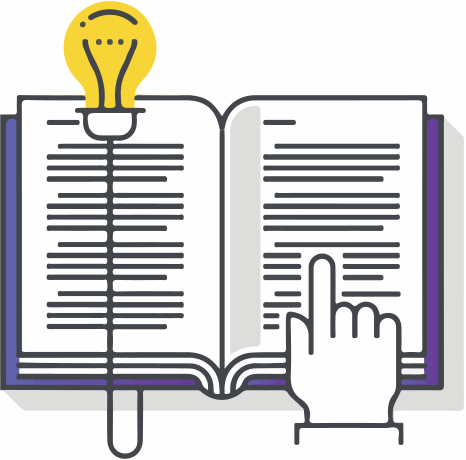

Следующей задачей
после работы с содержанием продукта и проекта будет задача
планирования расписания
. Необходимо разработать расписание с учетом ограничений и исключений проекта и это расписание должно базироваться на созданной ИСР.
Цитата
